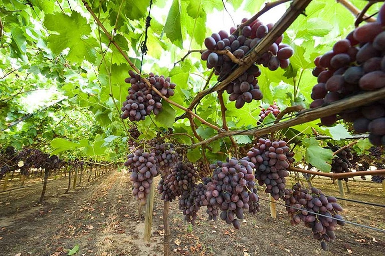

A grape is a fruiting berry of the deciduous woody vines of the botanical genus Vitis. Grapes can be eaten raw or they can be used for making wine, jam, juice, jelly, grape seed extract, raisins, vinegar, and grape seed oil. Grapes are a non-climacteric type of fruit, generally occurring in clusters. Grapes are a type of fruit that grow in clusters of 15 to 300, and can be crimson, black, dark blue, yellow, green, orange and pink. White grapes are actually green in color, and are evolutionarily derived from the purple grape. Mutations in two regulatory genes of white grapes turn off production of anthocyanins, which are responsible for the color of purple grapes. Anthocyanins and other pigment chemicals of the larger family of polyphenols in purple grapes are responsible for the varying shades of purple in red wines. Grapes are typically an ellipsoid shape resembling a prolate spheroid.